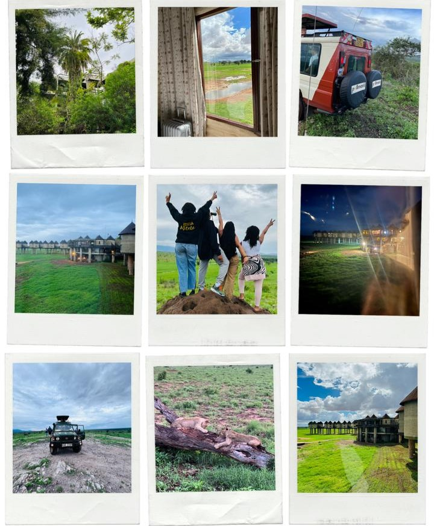
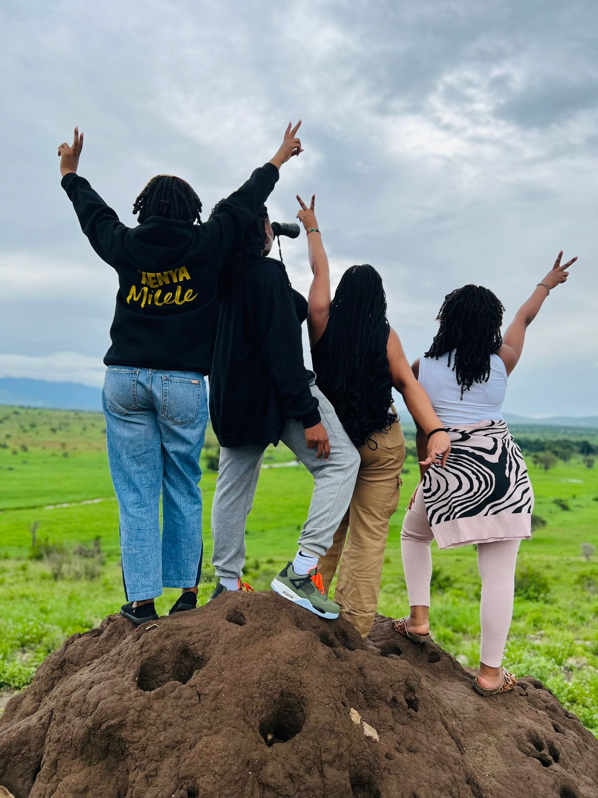

Introduction
Embarking on a budget-friendly safari adventure requires strategic planning and a commitment to saving, as my friend and I discovered during our recent visit to Salt Lick Lodge in Tsavo, Kenya. Our journey was a perfect blend of thrilling safaris, delectable culinary experiences, and budget-conscious travel tips that made our 2-night, 3-day trip both memorable and affordable.
Authentic Experience
Our stay at Salt Lick Lodge in Tsavo surpassed our expectations, offering not only incredible wildlife encounters but also a delightful culinary journey through East African flavors. From exhilarating safaris to leisurely lounging sessions, each moment was a testament to the wonders of budget travel.
Highlight
On our first day, we were greeted with an impeccable setup and a thrilling safari adventure that allowed us to witness a plethora of animals in their natural habitat. From majestic elephants to graceful giraffes, Tsavo's wildlife stole the show. After a day filled with excitement, we indulged in relaxation, delicious meals, and refreshing drinks, savoring every moment of our budget-friendly luxury.
Tips for a 2-Night, 3-Day Camping Trip
1.Comfortable Outfits: Prioritize lightweight, breathable clothing that can be layered for varying temperatures. Opt for moisture-wicking fabrics and sturdy footwear suitable for outdoor exploration.
2.Packing Essentials: Don't forget sun protection, versatile clothing items, and warm layers for cooler evenings at the campsite.
3.Commuting via Train (Nairobi to Voi) and Back: Book train tickets in advance to secure your seats and arrive early at the station for a smooth boarding process. Pack snacks, water, and entertainment for the journey, and research transportation options from the train station to your campsite in Voi and back.
Conclusion
Our budget-friendly safari adventure at Salt Lick Lodge in Tsavo was a testament to the incredible experiences that can be enjoyed without breaking the bank. By combining strategic saving habits with essential travel tips, we were able to immerse ourselves in the wonders of Tsavo's wildlife while staying within our budget. Whether you're a seasoned traveler or embarking on your first safari adventure, Tsavo offers a wealth of experiences waiting to be discovered, all while staying true to your budget-conscious mindset..